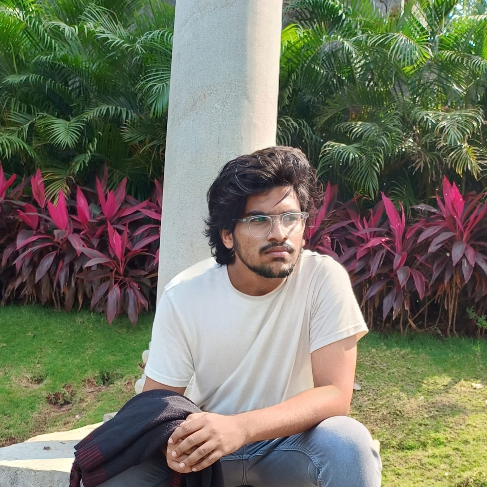

Hi,My name is Gaddam Vivek Chandra Reddy
I am a

Welcome! I'm Vivek Chandra Reddy, a dedicated professional with a diverse skill set in data science and software development. I have completed internships at GOOGLE AI-ML VIRTUAL INTERNSHIP, Unified Mentor Pvt. Ltd. as a Data Science intern and at CodeSpeedy as a Python developer. My experience includes a strong proficiency in Python, Django, SQL, HTML/CSS, and various other technologies. My journey in the tech world began with a solid foundation in computer science, and I have honed my skills through various internships and projects. Notably, I was a hackathon runner-up at CBIT and have solved over 400+ problems on LeetCode. My experience with tools such as pandas, matplotlib, and Django, coupled with my dedication to continuous learning, has enabled me to tackle complex data challenges effectively. Beyond technical expertise, I hold a strong academic background with a 9.4 CGPA at CBIT College and a 97.9 percentile in JEE Mains. My commitment to excellence is evident through my achievements, including 5-star ratings in Python, SQL, and problem solving on HackerRank, and a daily streak of over 300+ days on LeetCode. Explore my portfolio to learn more about my skills, achievements, and how I can contribute to your team's success.
Web Developer
Data Science
Machine Learning
Data Analysis
 HTML
HTML CSS
CSS JavaScript
JavaScript TensorFlow
TensorFlow Python
Python Flask
Flask
Name: Gaddam Vivek Chandra Reddy
Experienced professional with completed internships at GOOGLE AI-ML VIRTUAL INTERNSHIP, CodeSpeedy and Unified Mentor Pvt. Ltd.,
specializing in Data Science and full-stack web development. Skilled in data preprocessing,
exploratory data analysis, and utilizing tools like pandas, matplotlib, and Django. Dedicated to
ensuring optimal performance and client satisfaction through proactive problem-solving and
continuous improvement initiatives.
Birthday: 02/10/2005
Phone: 6301856453
City: Hyderabad
Degree: Computer Science and Engineering
Email: vivek.gaddam2005@gmail.com
Past Companies: GOOGLE AI-ML VIRTUAL INTERNSHIP, CodeSpeedy, Unified Mentor Pvt. Ltd.